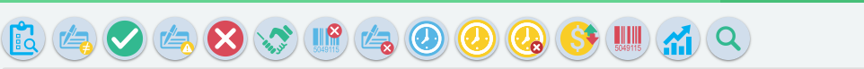
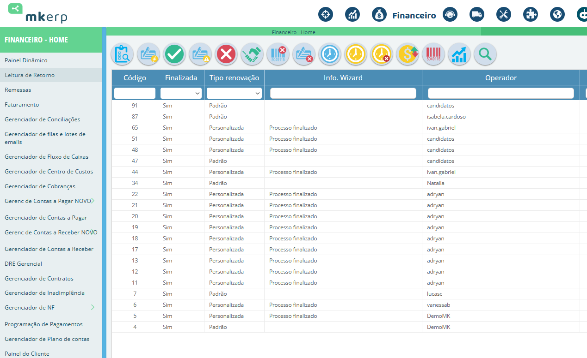
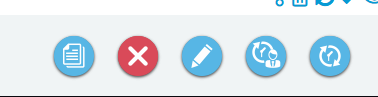
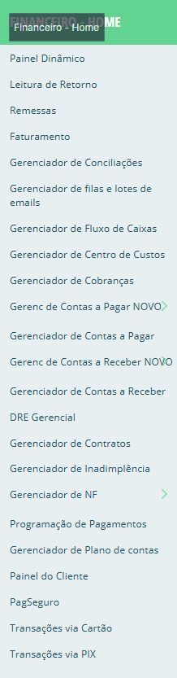

O ERP da MK Solutions é um ecossistema de gestão para ISPs. Ele conecta módulos de forma prática: contratos, financeiro e operação conversando entre si para reduzir retrabalho, dar rastreabilidade e acelerar decisões. Nesta página eu apresento, com foco comercial e funcional, o Gerenciador de Contratos e como ele se integra ao financeiro sem perder a visão de que isso é parte do ERP completo.
Para um provedor, contrato não é “só cadastro”, contrato é o que define plano, condições, vigência, regras de renovação e o que precisa refletir no financeiro. Por isso, dentro do ERP MK Solutions, o módulo de contratos funciona como uma engrenagem integrada: ele alimenta processos e recebe informações de outros módulos, mantendo tudo consistente e rastreável.
Em vez de cada equipe trabalhar “do seu jeito”, o ERP entrega um fluxo único, reduzindo erros e divergências de informação.
Cada ação fica registrada por operador e horário. Isso dá segurança para o provedor e agilidade na resolução de dúvidas.
O módulo de contratos conversa com o financeiro, cobranças e relatórios. O objetivo é reduzir retrabalho e proteger receita.
Na prática, o provedor precisa enxergar rapidamente o que foi processado, o que está pendente, quem executou, quando executou e qual foi o resultado. Esse módulo entrega exatamente isso: um painel de acompanhamento com filtros, status e rastreabilidade do jeito que o suporte e o financeiro precisam.
Organiza e acompanha contratos por status, facilitando ações de rotina (consulta, ajuste, reprocesso e conferência).
Ajuda a identificar contratos por período e acompanhar a execução (início/fim), evitando “furo” de vencimento.
Mostra quem fez o quê. Isso acelera auditoria e reduz ruído entre atendimento, financeiro e gestão.
A barra superior reúne atalhos que aceleram o trabalho: consultar, validar, confirmar, cancelar, acompanhar prazos, acessar rotinas financeiras e gerar relatórios. Isso reduz cliques, economiza tempo e ajuda o time a atuar com padrão.

Acompanha as execuções das rotinas de renovação (o que rodou, quando rodou e o status do processamento).
Visão rápida de renovações recentes para validar comportamento da carteira e rotinas de renovação.
A carteira viva do provedor, contratos ativos para consulta e acompanhamento operacional.
Lista contratos suspensos para análise e ação conforme regras internas do ISP.
Visão de contratos cancelados, importante para auditoria, conferência e análise de churn.
Mostra contratos que ainda não tiveram aceite, evitando pendência comercial/jurídica virar problema.
O painel que protege receita: contratos que não estão gerando cobrança aparecem aqui.
Lista contratos vencidos para ação rápida (antes de virar fila de reclamação ou inadimplência).
Visão preventiva para antecipar renovação, contato e correções antes do vencimento.
Contratos criados que ainda não efetivaram/ativaram, controla onboarding e pendências.
Painel de troubleshooting: mostra contratos presos por inconsistência antes da ativação.
Mostra movimentações comerciais (subida/descida de plano) e dá visão real da evolução da base.
Controle das regras/gerações de descontos por inatividade com rastreabilidade e padrão.
Templates para visões e relatórios sintéticos, gestão rápida com padrão.
Modelos de pesquisa e filtros salvos para repetir consultas importantes sem retrabalho.
Esse painel é onde o time trabalha de verdade. Ele permite filtrar por código, tipo de renovação, status de finalização, operador e datas. Em atendimento, isso faz diferença: você consegue chegar no ponto do problema rápido.

Você não precisa “caçar” informação. Filtra por coluna e encontra o que precisa com velocidade e clareza.
Mostra o estado/resultado do processamento. Ajuda a entender se o fluxo foi concluído ou se ficou pendente.
Registro por operador e horários. Perfeito para suporte: “quem executou isso?” tem resposta objetiva.
Controle de início e fim dá visão real de execução, útil para gestão do time e acompanhamento de rotina.
Aqui ficam os comandos de execução no registro selecionado. A ideia é simples: você seleciona a linha e executa a ação certa como visualizar, editar, renovar/reprocessar, excluir (conforme permissão) e atualizar.

Abre o contrato selecionado para consulta completa: detalhes, histórico e informações necessárias para atendimento.
Interrompe operação em andamento ou remove registro (dependendo do contexto e permissões). Operação sempre controlada.
Permite ajustar dados contratuais com segurança. Útil quando o ISP precisa corrigir informação rapidamente.
Executa rotina de renovação/reprocessamento. Ajuda a manter a base “em dia” e reduzir trabalho manual.
Recarrega a listagem e sincroniza a visão com o banco. Bom para quando há alterações simultâneas por outros usuários.
Para um ISP, a grande dor é perder tempo conciliando informação: contrato em um lugar, cobrança em outro, status em outro. No ERP MK Solutions, a lógica é central: o módulo de contratos conversa com o financeiro para sustentar rotinas como contas a receber, cobranças e relatórios gerenciais. Isso protege receita e deixa o time mais rápido.

Centraliza recebíveis e ajuda a acompanhar o que está em aberto. Contrato consistente evita cobrança errada.
Rotina essencial para reduzir inadimplência e organizar a régua de cobrança do provedor.
Visão clara de entradas e saídas. Ajuda o ISP a planejar investimento e expansão com segurança.
Consolida visão gerencial. Bom para diretoria enxergar resultado, margem e evolução do negócio.